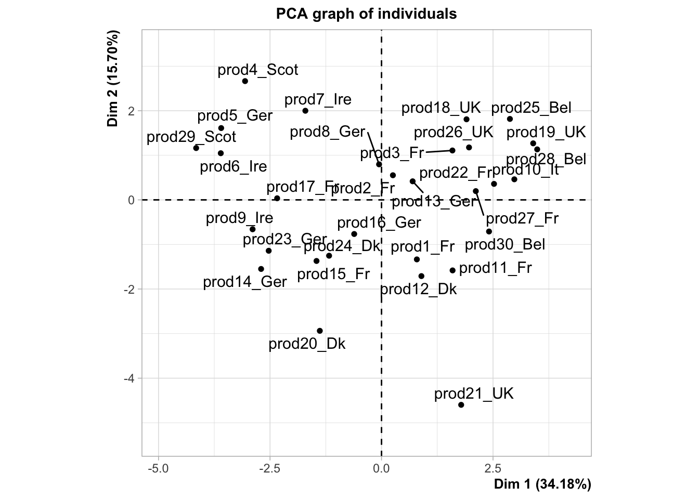
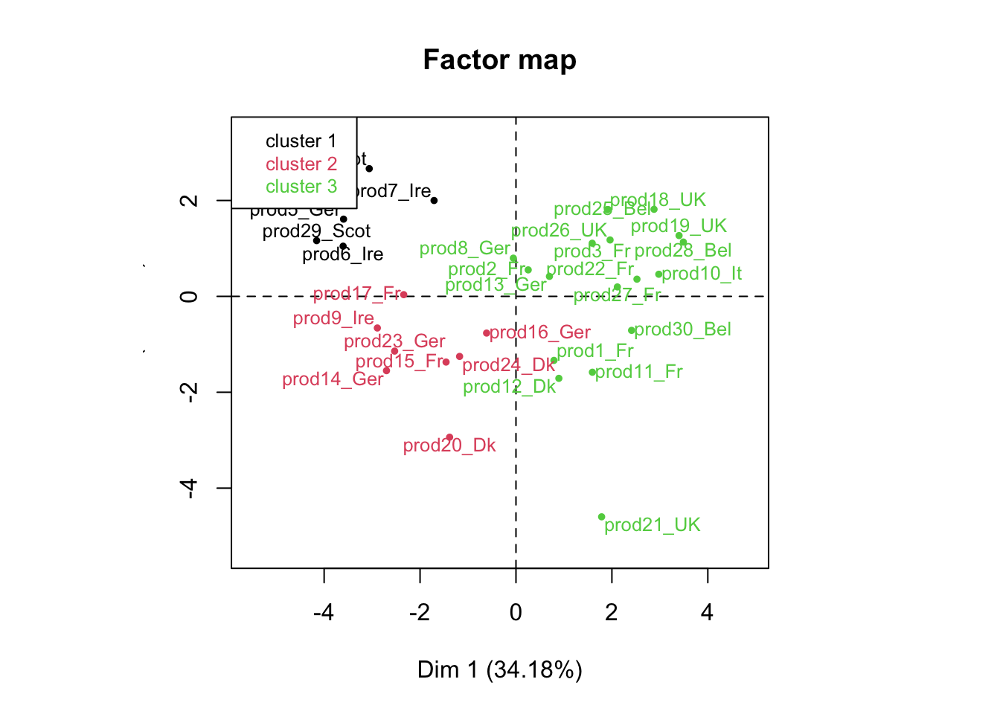
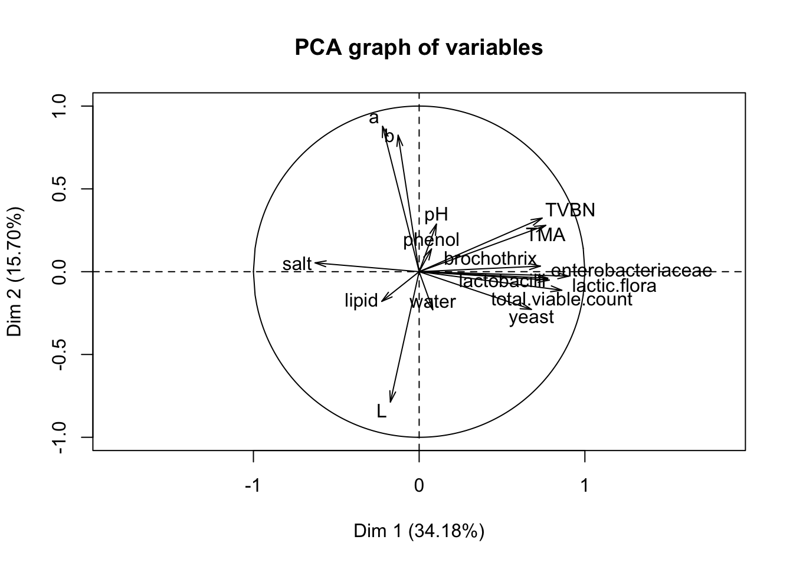
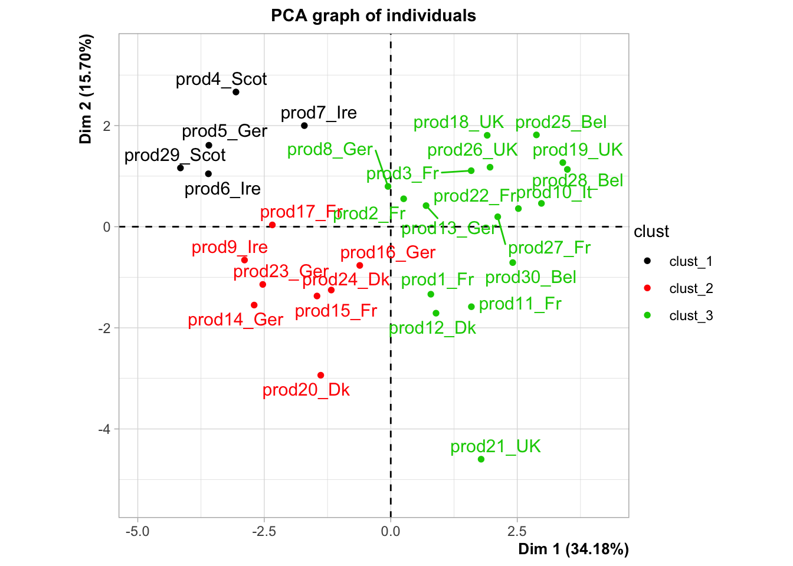
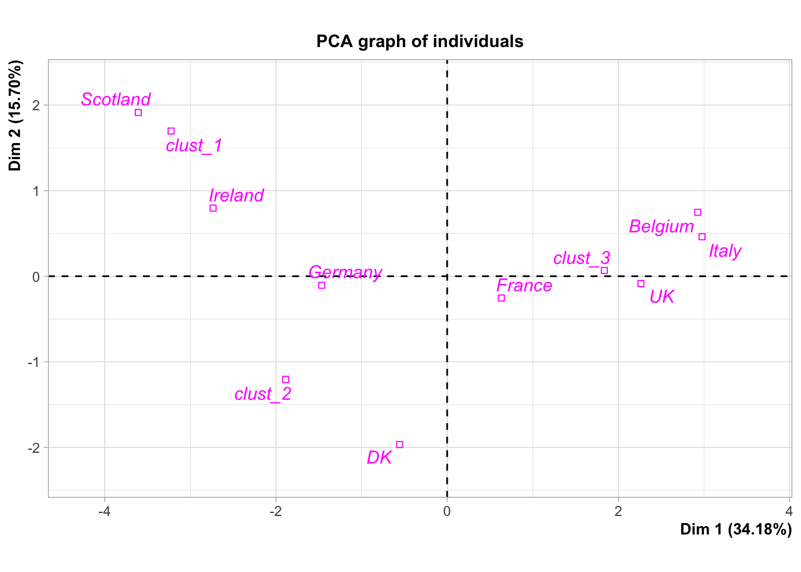
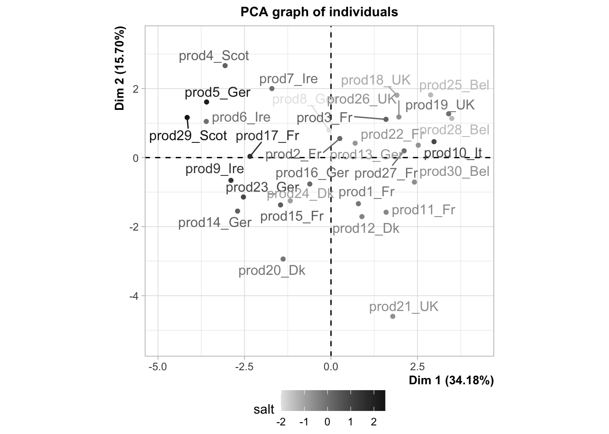

Chapter 1 Understanding the data from a product perspective
1.1 Understanding the products from a chemical and physical point of view
In the following code, we first import the data with the read.delim2 function, then we print the first rows with the head function ; finally we make a summary of the dataset with the summary function. All these steps are really important when you begin you analysis.
salmon_car <- read.delim2("salmon_characteristics.txt",
header=TRUE, row.names=1, comment.char="#",dec=",",stringsAsFactors=TRUE)
head(salmon_car)## water lipid TVBN TMA salt phenol pH
## prod1_Fr -0.8644 1.1375 -0.7629 -0.8717 -0.1471 -0.3776 1.5412
## prod2_Fr -1.1476 0.7036 0.2357 0.3204 0.1626 0.0112 1.2098
## prod3_Fr -0.4172 0.3378 0.4354 1.2144 0.3174 0.4001 0.3812
## prod4_Scot -0.8147 -0.0961 -0.5632 -0.8717 0.3174 -0.4554 0.2154
## prod5_Ger -1.6991 0.0366 -0.7629 -0.8717 2.1752 -0.3776 -0.2817
## prod6_Ire -0.9886 0.9653 -0.7629 -0.8717 0.0077 0.6594 1.0441
## total.viable.count lactic.flora lactobacilli brochothrix yeast
## prod1_Fr 0.1112 0.6665 1.1382 0.5461 0.7729
## prod2_Fr 0.4302 -0.4514 0.1290 -0.7559 1.2034
## prod3_Fr 0.8225 0.8725 0.4088 0.6465 0.2875
## prod4_Scot -0.2432 -1.5861 -1.0624 -0.7559 -1.0340
## prod5_Ger -1.5584 -1.5861 -1.0624 -0.7559 -1.0340
## prod6_Ire -2.5977 -1.5861 -1.0624 -0.7559 -1.0340
## enterobacteriaceae L a b origin
## prod1_Fr 0.8314 0.9917 -0.6467 -0.4567 France
## prod2_Fr 0.5998 0.8542 0.5297 0.9551 France
## prod3_Fr 0.2524 -0.8548 0.3927 0.2813 France
## prod4_Scot -1.5793 0.3020 1.7439 3.3236 Scotland
## prod5_Ger -0.9582 -1.3485 0.7341 0.5485 Germany
## prod6_Ire -1.5793 -0.4322 0.4016 0.4278 Irelandsummary(salmon_car)## water lipid TVBN TMA
## Min. :-1.69910 Min. :-2.4628000 Min. :-1.1623 Min. :-0.8717000
## 1st Qu.:-0.85198 1st Qu.:-0.4259750 1st Qu.:-0.7629 1st Qu.:-0.8717000
## Median :-0.07435 Median : 0.2159000 Median :-0.3635 Median :-0.2757000
## Mean :-0.00001 Mean : 0.0000067 Mean : 0.0000 Mean : 0.0000033
## 3rd Qu.: 0.47713 3rd Qu.: 0.5763000 3rd Qu.: 0.4354 3rd Qu.: 0.5439000
## Max. : 2.02730 Max. : 1.6251000 Max. : 2.6322 Max. : 2.4065000
##
## salt phenol pH total.viable.count
## Min. :-2.0049 Min. :-1.20730 Min. :-1.7733000 Min. :-2.5977000
## 1st Qu.:-0.6115 1st Qu.:-0.65633 1st Qu.:-0.8617500 1st Qu.:-0.3530250
## Median : 0.0077 Median :-0.29985 Median :-0.0331500 Median : 0.2699000
## Mean : 0.0000 Mean : 0.00001 Mean :-0.0000067 Mean : 0.0000067
## 3rd Qu.: 0.3174 3rd Qu.: 0.40010 3rd Qu.: 0.8368750 3rd Qu.: 0.8187750
## Max. : 2.4848 Max. : 3.45930 Max. : 2.0384000 Max. : 1.1384000
##
## lactic.flora lactobacilli brochothrix
## Min. :-1.5861000 Min. :-1.0624000 Min. :-0.7559
## 1st Qu.:-0.4710500 1st Qu.:-1.0624000 1st Qu.:-0.7559
## Median : 0.3886500 Median : 0.2064500 Median :-0.7559
## Mean : 0.0000033 Mean :-0.0000067 Mean : 0.0000
## 3rd Qu.: 0.8312750 3rd Qu.: 0.9333500 3rd Qu.: 0.8192
## Max. : 1.5327000 Max. : 1.9639000 Max. : 2.4632
##
## yeast enterobacteriaceae L a
## Min. :-1.0340000 Min. :-1.57930 Min. :-1.8353 Min. :-3.9939
## 1st Qu.:-1.0340000 1st Qu.:-0.65815 1st Qu.:-0.8034 1st Qu.:-0.4152
## Median : 0.2608000 Median : 0.04190 Median : 0.1441 Median : 0.2868
## Mean : 0.0000033 Mean :-0.00001 Mean : 0.0000 Mean : 0.0000
## 3rd Qu.: 0.7537750 3rd Qu.: 0.79060 3rd Qu.: 0.5455 3rd Qu.: 0.5362
## Max. : 2.1072000 Max. : 1.64720 Max. : 2.5982 Max. : 1.7439
##
## b origin
## Min. :-1.827700 France :8
## 1st Qu.:-0.577750 Germany:6
## Median : 0.073650 UK :4
## Mean :-0.000003 Belgium:3
## 3rd Qu.: 0.388475 DK :3
## Max. : 3.323600 Ireland:3
## (Other):3As you can see in the output, something is missing in the description of the variable origin. By default, the numbers of levels to be displayed is equal to 7. Let’s set the argument maxsum to 8 and see what happens.
summary(salmon_car,maxsum=8)## water lipid TVBN TMA
## Min. :-1.69910 Min. :-2.4628000 Min. :-1.1623 Min. :-0.8717000
## 1st Qu.:-0.85198 1st Qu.:-0.4259750 1st Qu.:-0.7629 1st Qu.:-0.8717000
## Median :-0.07435 Median : 0.2159000 Median :-0.3635 Median :-0.2757000
## Mean :-0.00001 Mean : 0.0000067 Mean : 0.0000 Mean : 0.0000033
## 3rd Qu.: 0.47713 3rd Qu.: 0.5763000 3rd Qu.: 0.4354 3rd Qu.: 0.5439000
## Max. : 2.02730 Max. : 1.6251000 Max. : 2.6322 Max. : 2.4065000
##
##
## salt phenol pH total.viable.count
## Min. :-2.0049 Min. :-1.20730 Min. :-1.7733000 Min. :-2.5977000
## 1st Qu.:-0.6115 1st Qu.:-0.65633 1st Qu.:-0.8617500 1st Qu.:-0.3530250
## Median : 0.0077 Median :-0.29985 Median :-0.0331500 Median : 0.2699000
## Mean : 0.0000 Mean : 0.00001 Mean :-0.0000067 Mean : 0.0000067
## 3rd Qu.: 0.3174 3rd Qu.: 0.40010 3rd Qu.: 0.8368750 3rd Qu.: 0.8187750
## Max. : 2.4848 Max. : 3.45930 Max. : 2.0384000 Max. : 1.1384000
##
##
## lactic.flora lactobacilli brochothrix
## Min. :-1.5861000 Min. :-1.0624000 Min. :-0.7559
## 1st Qu.:-0.4710500 1st Qu.:-1.0624000 1st Qu.:-0.7559
## Median : 0.3886500 Median : 0.2064500 Median :-0.7559
## Mean : 0.0000033 Mean :-0.0000067 Mean : 0.0000
## 3rd Qu.: 0.8312750 3rd Qu.: 0.9333500 3rd Qu.: 0.8192
## Max. : 1.5327000 Max. : 1.9639000 Max. : 2.4632
##
##
## yeast enterobacteriaceae L a
## Min. :-1.0340000 Min. :-1.57930 Min. :-1.8353 Min. :-3.9939
## 1st Qu.:-1.0340000 1st Qu.:-0.65815 1st Qu.:-0.8034 1st Qu.:-0.4152
## Median : 0.2608000 Median : 0.04190 Median : 0.1441 Median : 0.2868
## Mean : 0.0000033 Mean :-0.00001 Mean : 0.0000 Mean : 0.0000
## 3rd Qu.: 0.7537750 3rd Qu.: 0.79060 3rd Qu.: 0.5455 3rd Qu.: 0.5362
## Max. : 2.1072000 Max. : 1.64720 Max. : 2.5982 Max. : 1.7439
##
##
## b origin
## Min. :-1.827700 Belgium :3
## 1st Qu.:-0.577750 DK :3
## Median : 0.073650 France :8
## Mean :-0.000003 Germany :6
## 3rd Qu.: 0.388475 Ireland :3
## Max. : 3.323600 Italy :1
## Scotland:2
## UK :4Now we want to get a multivariate description of the smoked salmons based on their chemical and physical measurements. As all the measures (except origin) are continuous, we’re going to run a PCA on the dataset. It seems fair to consider all the variables as active, and to scale them to unit variance. Here, the last variable origin is considered as illustrative.
To do so, we are using the FactoMineR package and the PCA function. First, load the FactoMineR package and run the PCA function.
library(FactoMineR)
res <- PCA(salmon_car,quali.sup=17,graph=F)
names(res)## [1] "eig" "var" "ind" "svd" "quali.sup" "call"When you run a PCA, you often want to save the results in an R object, in order to use them latter. This is what we did: we saved them in an object we named res, then we applied the names function to that object. This function allows you to obtain the names of the different components of the input. For instance, if you want to see of the variance is decomposed:
res$eig## eigenvalue percentage of variance cumulative percentage of variance
## comp 1 5.46821199 34.17632493 34.17632
## comp 2 2.51222592 15.70141202 49.87774
## comp 3 1.80173714 11.26085714 61.13859
## comp 4 1.33622262 8.35139136 69.48999
## comp 5 1.24367295 7.77295594 77.26294
## comp 6 0.98474448 6.15465300 83.41759
## comp 7 0.87880761 5.49254757 88.91014
## comp 8 0.55820900 3.48880625 92.39895
## comp 9 0.35637332 2.22733324 94.62628
## comp 10 0.29787183 1.86169893 96.48798
## comp 11 0.18417610 1.15110061 97.63908
## comp 12 0.15473811 0.96711318 98.60619
## comp 13 0.09236742 0.57729636 99.18349
## comp 14 0.07795966 0.48724787 99.67074
## comp 15 0.03834453 0.23965332 99.91039
## comp 16 0.01433732 0.08960828 100.00000barplot(res$eig[,1])
Now, let’s see what happens if we run the plot.PCA function to the res object.
plot.PCA(res,choix="var")plot.PCA(res,choix="ind")plot.PCA(res,choix="ind",invisible="quali")
As you can see, some news feature have been added to the FactoMineR package, notably the ggplot type representation of the individuals and the variables. In this example, we can see how important supplementary variables can be. We can also see how they can be represented, which is the case by default. Here, we projected the information on the origin of the smoked salmon. Look at the product 10, how do you think this product is salty?
Any questions about the concept of illustrative variables? What do you think about the percentage associated with each axis?
Now that we know how to differentiate illustrative or supplementary variables from the active ones, let’s spend some time to interpret this PCA. As you know, the two graphical representations have to be interpreted jointly.
You may want to use the dimdesc function to get an interpretation of the axis.
resdim <- dimdesc(res)
names(resdim)## [1] "Dim.1" "Dim.2" "Dim.3" "call"resdim$Dim.1## $quanti
## correlation p.value
## lactic.flora 0.9027708 9.041485e-12
## total.viable.count 0.8608419 1.046362e-09
## lactobacilli 0.7850662 2.795050e-07
## enterobacteriaceae 0.7762724 4.619296e-07
## TMA 0.7642286 8.873792e-07
## TVBN 0.7421954 2.668420e-06
## brochothrix 0.7317464 4.332436e-06
## yeast 0.6773779 3.930677e-05
## salt -0.6282864 2.011201e-04
##
## $quali
## R2 p.value
## origin 0.7348005 3.964817e-05
##
## $category
## Estimate p.value
## origin=Belgium 2.871677 0.02182312
## origin=UK 2.208683 0.03851838
## origin=Ireland -2.788912 0.03325308
## origin=Scotland -3.662799 0.02354381
##
## attr(,"class")
## [1] "condes" "list"Now, you can try to explore the dataset in a more dynamical manner. What is the difference between this,
library(explor)
res <- PCA(salmon_car,quali.sup=17,graph=F)
explor(res)and this?
res <- PCA(salmon_car[,-17],graph=F)
explor(res)Exercise. You can play with the different arguments of the PCA and the plot.PCA functions.
Remark. PCA, by extracting dimensions, can be seen as a method to summarize the data, or more precisely the relations amongst the variables of your dataset. Some people would say that by running a PCA you cluster variables into dimensions. It’s very convenient, because you simplify your understanding by using a few dimensions instead of all the variables. You could do the same thing with the individuals. Instead of reducing the complexity on your variables, you will reduce the complexity on the individuals.
reshcpc <- HCPC(res,nb.clust=3)
names(reshcpc)## [1] "data.clust" "desc.var" "desc.axes" "desc.ind" "call"names(reshcpc$desc.var)## [1] "test.chi2" "category" "quanti.var" "quanti" "call"names(reshcpc$desc.var$quanti)## [1] "1" "2" "3"reshcpc$desc.var$quanti$`1`## v.test Mean in category Overall mean sd in category
## b 2.967108 1.23202 -3.333333e-06 1.1663873
## salt 2.404836 0.99856 -1.457168e-17 1.0973584
## a 2.291474 0.95148 -3.700743e-18 0.4806493
## TMA -2.099319 -0.87170 3.333333e-06 0.0000000
## yeast -2.490229 -1.03400 3.333333e-06 0.0000000
## water -2.519590 -1.04622 -1.000000e-05 0.5634578
## enterobacteriaceae -3.052957 -1.26770 -1.000000e-05 0.3944804
## lactic.flora -3.077490 -1.27786 3.333333e-06 0.6164800
## total.viable.count -3.819886 -1.58612 6.666667e-06 0.9248322
## Overall sd p.value
## b 0.9999991 0.0030061550
## salt 1.0000064 0.0161797401
## a 0.9999972 0.0219360319
## TMA 1.0000099 0.0357888054
## yeast 0.9999921 0.0127660659
## water 1.0000067 0.0117491490
## enterobacteriaceae 1.0000148 0.0022659864
## lactic.flora 1.0000041 0.0020875189
## total.viable.count 1.0000033 0.0001335133reshcpc$desc.var$quanti$`2`## v.test Mean in category Overall mean sd in category Overall sd
## L 2.442596 0.7521750 -1.619075e-18 0.5146511 0.9999999
## water 2.241235 0.6901625 -1.000000e-05 0.9409535 1.0000067
## lactic.flora -2.264032 -0.6971875 3.333333e-06 0.7459357 1.0000041
## TMA -2.291215 -0.7055625 3.333333e-06 0.2520950 1.0000099
## b -2.309972 -0.7113375 -3.333333e-06 0.4989181 0.9999991
## TVBN -2.396348 -0.7379375 -1.966020e-17 0.3225866 1.0000055
## brochothrix -2.454675 -0.7559000 -5.551115e-18 0.0000000 1.0000069
## lactobacilli -2.903449 -0.8941125 -6.666667e-06 0.4452469 1.0000168
## p.value
## L 0.014582067
## water 0.025010865
## lactic.flora 0.023572148
## TMA 0.021950968
## b 0.020889703
## TVBN 0.016559366
## brochothrix 0.014101201
## lactobacilli 0.003690765reshcpc$desc.var$quanti$`3`## v.test Mean in category Overall mean sd in category
## lactic.flora 4.334916 0.7039353 3.333333e-06 0.4319264
## total.viable.count 4.055101 0.6585000 6.666667e-06 0.3942778
## lactobacilli 3.996881 0.6490412 -6.666667e-06 0.7748847
## enterobacteriaceae 3.794019 0.6160941 -1.000000e-05 0.6448174
## TMA 3.623520 0.5884176 3.333333e-06 0.9648019
## yeast 3.602067 0.5849235 3.333333e-06 0.8154801
## brochothrix 3.559652 0.5780412 -5.551115e-18 0.9968236
## TVBN 3.303261 0.5364059 -1.966020e-17 1.0210896
## salt -3.148943 -0.5113471 -1.457168e-17 0.6917277
## Overall sd p.value
## lactic.flora 1.0000041 1.458157e-05
## total.viable.count 1.0000033 5.011257e-05
## lactobacilli 1.0000168 6.418262e-05
## enterobacteriaceae 1.0000148 1.482285e-04
## TMA 1.0000099 2.906203e-04
## yeast 0.9999921 3.156966e-04
## brochothrix 1.0000069 3.713463e-04
## TVBN 1.0000055 9.556725e-04
## salt 1.0000064 1.638622e-03Instead of having 30 smoked salmons, we now have 3 groups of salmons: that’s how we reduce the complexity of our problem.
Let’s use a very interesting output of our HCPC function, and play with it.
summary(reshcpc$data.clust)## water lipid TVBN TMA
## Min. :-1.69910 Min. :-2.4628000 Min. :-1.1623 Min. :-0.8717000
## 1st Qu.:-0.85198 1st Qu.:-0.4259750 1st Qu.:-0.7629 1st Qu.:-0.8717000
## Median :-0.07435 Median : 0.2159000 Median :-0.3635 Median :-0.2757000
## Mean :-0.00001 Mean : 0.0000067 Mean : 0.0000 Mean : 0.0000033
## 3rd Qu.: 0.47713 3rd Qu.: 0.5763000 3rd Qu.: 0.4354 3rd Qu.: 0.5439000
## Max. : 2.02730 Max. : 1.6251000 Max. : 2.6322 Max. : 2.4065000
##
## salt phenol pH total.viable.count
## Min. :-2.0049 Min. :-1.20730 Min. :-1.7733000 Min. :-2.5977000
## 1st Qu.:-0.6115 1st Qu.:-0.65633 1st Qu.:-0.8617500 1st Qu.:-0.3530250
## Median : 0.0077 Median :-0.29985 Median :-0.0331500 Median : 0.2699000
## Mean : 0.0000 Mean : 0.00001 Mean :-0.0000067 Mean : 0.0000067
## 3rd Qu.: 0.3174 3rd Qu.: 0.40010 3rd Qu.: 0.8368750 3rd Qu.: 0.8187750
## Max. : 2.4848 Max. : 3.45930 Max. : 2.0384000 Max. : 1.1384000
##
## lactic.flora lactobacilli brochothrix
## Min. :-1.5861000 Min. :-1.0624000 Min. :-0.7559
## 1st Qu.:-0.4710500 1st Qu.:-1.0624000 1st Qu.:-0.7559
## Median : 0.3886500 Median : 0.2064500 Median :-0.7559
## Mean : 0.0000033 Mean :-0.0000067 Mean : 0.0000
## 3rd Qu.: 0.8312750 3rd Qu.: 0.9333500 3rd Qu.: 0.8192
## Max. : 1.5327000 Max. : 1.9639000 Max. : 2.4632
##
## yeast enterobacteriaceae L a
## Min. :-1.0340000 Min. :-1.57930 Min. :-1.8353 Min. :-3.9939
## 1st Qu.:-1.0340000 1st Qu.:-0.65815 1st Qu.:-0.8034 1st Qu.:-0.4152
## Median : 0.2608000 Median : 0.04190 Median : 0.1441 Median : 0.2868
## Mean : 0.0000033 Mean :-0.00001 Mean : 0.0000 Mean : 0.0000
## 3rd Qu.: 0.7537750 3rd Qu.: 0.79060 3rd Qu.: 0.5455 3rd Qu.: 0.5362
## Max. : 2.1072000 Max. : 1.64720 Max. : 2.5982 Max. : 1.7439
##
## b origin clust
## Min. :-1.827700 France :8 1: 5
## 1st Qu.:-0.577750 Germany:6 2: 8
## Median : 0.073650 UK :4 3:17
## Mean :-0.000003 Belgium:3
## 3rd Qu.: 0.388475 DK :3
## Max. : 3.323600 Ireland:3
## (Other):3res <- PCA(reshcpc$data.clust,quali.sup=c(17,18),graph=F)
plot.PCA(res,choix="var",graph.type = "classic")
plot.PCA(res,choix="var",graph.type = "ggplot")plot.PCA(res,choix="ind",invisible="quali",habillage = 17)plot.PCA(res,choix="ind",invisible="quali",habillage = 18)
plot.PCA(res,choix="ind",invisible="ind")
plot(res,habillage="salt",ggoptions=list(low.col.quanti="grey90",high.col.quanti="grey10"),
legend=list(x="bottom"),invisible = "quali")
Exercise. This exercise is very important as it presents two very useful functions of the FactoMineR package.
descfreq(table(reshcpc$data.clust$clust,reshcpc$data.clust$origin))
catdes(reshcpc$data.clust,num.var=18)To understand the code, you should first run this:
table(reshcpc$data.clust$clust,reshcpc$data.clust$origin)
colnames(reshcpc$data.clust)Exercise. Please, provide a description of the French salmons.
1.2 Understanding the products from a hedonic point of view
This part will be more easy than the first one, now that you know how to run R functions. The only complicated thing is the dataset we’re going to use.
salmon_hedo_conso <- read.delim2("salmon_hedo_conso.txt", header=TRUE, row.names=1, comment.char="#",dec=",",stringsAsFactors=TRUE)
colnames(salmon_hedo_conso)## [1] "IKIDEN" "Country"
## [3] "prod1_Fr" "prod2_Fr"
## [5] "prod3_Fr" "prod4_Scot"
## [7] "prod5_Ger" "prod6_Ire"
## [9] "prod7_Ire" "prod8_Ger"
## [11] "prod9_Ire" "prod10_It"
## [13] "prod11_Fr" "prod12_Dk"
## [15] "prod13_Ger" "prod14_Ger"
## [17] "prod15_Fr" "prod16_Ger"
## [19] "prod17_Fr" "prod18_UK"
## [21] "prod19_UK" "prod20_Dk"
## [23] "prod21_UK" "prod22_Fr"
## [25] "prod23_Ger" "prod24_Dk"
## [27] "prod25_Bel" "prod26_UK"
## [29] "prod27_Fr" "prod28_Bel"
## [31] "prod29_Scot" "prod30_Bel"
## [33] "Who" "Frequence"
## [35] "When" "Taste"
## [37] "Healthy" "Pleasure"
## [39] "No.preparation" "Ways"
## [41] "Guest" "Authentic"
## [43] "Not.expensive" "Supermarket"
## [45] "Deli" "Caterer"
## [47] "Fish.shop" "Market"
## [49] "Mobile.van" "Everyday"
## [51] "Special" "Day.snack"
## [53] "Evening.snack" "Aperitif"
## [55] "Starter" "Salad"
## [57] "Cooked.meal" "Sandwich"
## [59] "Main" "Vegetable"
## [61] "Lemon" "Bread..butter"
## [63] "Lemon..bread..butter" "C..fraiche"
## [65] "C..fraiche.with.herbs" "Fresh.cheese"
## [67] "Fresh.cheese.with.herbs" "Shallots"
## [69] "Mustard" "Butter"
## [71] "Black.pepper" "Horseradish"
## [73] "Scottish" "Norwegian"
## [75] "Atlantic" "Irish"
## [77] "Wild" "Do.not.know"
## [79] "Colour" "Price"
## [81] "Origin" "Brand"
## [83] "Advertising" "Glossiness"
## [85] "Packaging" "Labelling.information"
## [87] "Number.slices" "Weight"
## [89] "Use.by.date" "Usual.brand"
## [91] "Appetising" "Firm"
## [93] "Regular" "Nice.colour"
## [95] "Nice.odour" "Smooth.texture"
## [97] "Firm.texture" "Greasy.mouth"
## [99] "Characteristic.taste" "Not.too.salty"salmon_hedo <- salmon_hedo_conso[,3:32]
head(salmon_hedo)## prod1_Fr prod2_Fr prod3_Fr prod4_Scot prod5_Ger prod6_Ire prod7_Ire
## 5101Lyon 0.5433 0.5433 -0.0187 0.5433 0.5433 -0.0187 1.1054
## 5102Lyon 0.4685 -0.3123 0.4685 0.4685 1.2494 -1.0932 -0.3123
## 5103Lyon 0.4354 1.3683 -0.9641 0.4354 1.3683 -0.4976 0.4354
## 5106Lyon 1.6920 1.6920 0.6004 1.1462 0.6004 -0.4912 -1.0371
## 5107Lyon 0.6167 -0.2056 0.2056 -0.6167 -1.4389 0.6167 0.6167
## 5108Lyon -0.0165 0.9714 -1.9922 0.9714 -1.0043 0.9714 -0.5104
## prod8_Ger prod9_Ire prod10_It prod11_Fr prod12_Dk prod13_Ger
## 5101Lyon -0.5808 0.5433 -0.5808 -0.0187 -2.8290 0.5433
## 5102Lyon 1.2494 0.4685 -0.3123 1.2494 0.4685 -0.3123
## 5103Lyon -0.4976 0.4354 -0.9641 -0.9641 -0.0311 -0.0311
## 5106Lyon -1.5829 0.6004 0.0546 -0.4912 0.0546 -1.5829
## 5107Lyon 0.2056 1.0278 0.6167 -0.6167 0.6167 1.0278
## 5108Lyon 1.4653 0.4775 -0.5104 1.4653 0.4775 0.4775
## prod14_Ger prod15_Fr prod16_Ger prod17_Fr prod18_UK prod19_UK
## 5101Lyon -1.7049 -1.7049 -1.1428 1.6674 -0.0187 0.5433
## 5102Lyon 1.2494 -2.6550 1.2494 -1.8741 -1.0932 0.4685
## 5103Lyon -0.9641 0.9019 -2.3635 0.4354 -1.8970 0.4354
## 5106Lyon -1.0371 0.6004 0.0546 -1.0371 -1.5829 -1.0371
## 5107Lyon 0.2056 -1.8500 -0.6167 0.6167 0.6167 1.0278
## 5108Lyon 0.9714 0.4775 -0.0165 0.4775 -1.9922 -1.4983
## prod20_Dk prod21_UK prod22_Fr prod23_Ger prod24_Dk prod25_Bel
## 5101Lyon -0.5808 1.1054 1.6674 -0.5808 0.5433 0.5433
## 5102Lyon -1.0932 0.4685 1.2494 -1.0932 -1.0932 0.4685
## 5103Lyon 0.9019 0.4354 -1.4305 0.4354 0.9019 1.3683
## 5106Lyon -0.4912 1.6920 0.0546 1.1462 0.6004 -0.4912
## 5107Lyon 1.4389 -1.4389 1.0278 1.4389 -1.8500 -1.0278
## 5108Lyon -0.5104 -0.5104 -0.5104 1.4653 -1.0043 -0.0165
## prod26_UK prod27_Fr prod28_Bel prod29_Scot prod30_Bel
## 5101Lyon -0.0187 -1.1428 -0.5808 1.1054 -0.0187
## 5102Lyon -0.3123 -0.3123 -0.3123 1.2494 -0.3123
## 5103Lyon -0.4976 -0.0311 1.3683 0.9019 -1.4305
## 5106Lyon 0.0546 -1.0371 -0.4912 0.0546 1.6920
## 5107Lyon -0.6167 -1.0278 -1.8500 0.6167 0.6167
## 5108Lyon -1.0043 -0.0165 -1.4983 0.9714 0.9714summary(salmon_hedo)## prod1_Fr prod2_Fr prod3_Fr prod4_Scot
## Min. :-2.1360 Min. :-3.72220 Min. :-2.7302 Min. :-2.1235
## 1st Qu.:-0.3774 1st Qu.:-0.68700 1st Qu.:-0.9501 1st Qu.:-0.3297
## Median : 0.3375 Median : 0.13755 Median :-0.1479 Median : 0.3313
## Mean : 0.2452 Mean : 0.04939 Mean :-0.1508 Mean : 0.2508
## 3rd Qu.: 0.9498 3rd Qu.: 0.86118 3rd Qu.: 0.6817 3rd Qu.: 0.9079
## Max. : 2.9666 Max. : 2.26040 Max. : 2.2639 Max. : 2.6550
## prod5_Ger prod6_Ire prod7_Ire prod8_Ger
## Min. :-2.5337 Min. :-2.4287 Min. :-3.1814 Min. :-2.88000
## 1st Qu.:-0.4006 1st Qu.:-0.5253 1st Qu.:-0.9135 1st Qu.:-0.85177
## Median : 0.4531 Median : 0.2530 Median :-0.1530 Median : 0.08645
## Mean : 0.2866 Mean : 0.1304 Mean :-0.1728 Mean :-0.02451
## 3rd Qu.: 1.0272 3rd Qu.: 0.8346 3rd Qu.: 0.5827 3rd Qu.: 0.83683
## Max. : 2.2748 Max. : 2.3256 Max. : 2.1494 Max. : 2.47150
## prod9_Ire prod10_It prod11_Fr prod12_Dk
## Min. :-5.3852 Min. :-3.1743 Min. :-3.230300 Min. :-3.33710
## 1st Qu.:-0.4916 1st Qu.:-1.1219 1st Qu.:-0.753850 1st Qu.:-0.80768
## Median : 0.3034 Median :-0.3754 Median : 0.084350 Median : 0.11725
## Mean : 0.1769 Mean :-0.3395 Mean :-0.005055 Mean : 0.01955
## 3rd Qu.: 0.9271 3rd Qu.: 0.4337 3rd Qu.: 0.777050 3rd Qu.: 0.86140
## Max. : 2.1506 Max. : 2.6033 Max. : 2.221300 Max. : 2.23290
## prod13_Ger prod14_Ger prod15_Fr prod16_Ger
## Min. :-2.3088 Min. :-2.268400 Min. :-2.99480 Min. :-2.8800
## 1st Qu.:-0.5555 1st Qu.:-0.804800 1st Qu.:-0.79033 1st Qu.:-1.0654
## Median : 0.2975 Median : 0.082850 Median : 0.05575 Median :-0.1009
## Mean : 0.1776 Mean : 0.001343 Mean :-0.03593 Mean :-0.1462
## 3rd Qu.: 0.9225 3rd Qu.: 0.786775 3rd Qu.: 0.75270 3rd Qu.: 0.7339
## Max. : 2.5355 Max. : 2.171200 Max. : 2.92530 Max. : 2.5916
## prod17_Fr prod18_UK prod19_UK prod20_Dk
## Min. :-3.1593 Min. :-4.7616 Min. :-3.02240 Min. :-2.9866
## 1st Qu.:-0.5062 1st Qu.:-1.0661 1st Qu.:-0.96808 1st Qu.:-1.0533
## Median : 0.3222 Median :-0.0846 Median : 0.01865 Median :-0.2525
## Mean : 0.2043 Mean :-0.1246 Mean :-0.06525 Mean :-0.2454
## 3rd Qu.: 0.9367 3rd Qu.: 0.8095 3rd Qu.: 0.83368 3rd Qu.: 0.5702
## Max. : 2.2967 Max. : 2.4062 Max. : 2.17190 Max. : 2.2533
## prod21_UK prod22_Fr prod23_Ger prod24_Dk
## Min. :-3.2295 Min. :-2.5573 Min. :-2.7796 Min. :-2.9200
## 1st Qu.:-1.3330 1st Qu.:-0.3786 1st Qu.:-0.5193 1st Qu.:-0.9318
## Median :-0.6263 Median : 0.4188 Median : 0.3100 Median :-0.1135
## Mean :-0.4891 Mean : 0.2796 Mean : 0.2141 Mean :-0.1635
## 3rd Qu.: 0.3882 3rd Qu.: 0.9916 3rd Qu.: 0.9432 3rd Qu.: 0.5862
## Max. : 2.2749 Max. : 2.9192 Max. : 2.2837 Max. : 2.1106
## prod25_Bel prod26_UK prod27_Fr prod28_Bel
## Min. :-3.7989 Min. :-3.246900 Min. :-3.4338 Min. :-3.86570
## 1st Qu.:-1.0892 1st Qu.:-0.775475 1st Qu.:-0.5337 1st Qu.:-0.92065
## Median :-0.2366 Median : 0.023550 Median : 0.2627 Median :-0.07275
## Mean :-0.2261 Mean : 0.003309 Mean : 0.1451 Mean :-0.08774
## 3rd Qu.: 0.6520 3rd Qu.: 0.835625 3rd Qu.: 0.9037 3rd Qu.: 0.78080
## Max. : 2.5281 Max. : 2.335100 Max. : 2.1495 Max. : 2.26810
## prod29_Scot prod30_Bel
## Min. :-2.85220 Min. :-3.098800
## 1st Qu.:-0.65350 1st Qu.:-0.835475
## Median : 0.14970 Median : 0.059250
## Mean : 0.08247 Mean : 0.009738
## 3rd Qu.: 0.85493 3rd Qu.: 0.908800
## Max. : 2.08720 Max. : 2.184200Exercise. What do you think you have in the dataset salmon_hedo?
Let’s run the following code:
res <- PCA(t(salmon_hedo),graph=F)
plot.PCA(res,choix="var")plot.PCA(res,choix="ind")
Here, we’ve transposed the dataset, which means that the statistical individuals are now the smoked salmons, and not the consumers any more: salmons are described by the preferences provided by the consumers.
Exercise. How can you get a better representation of the variables?